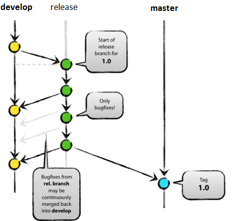

Git Workflow
An introduction to Git and some popular Git Workflows
Ahmad Haghighi
Free Software Advocate.
Personal blog: https://haghighi.site
E-Mail: haghighi@fedoraproject.org
@haghighi_ahmad
ToC
- Git
- Git terminologies
- Centralized workflow
- Forking workflow
- Feature-branch workflow
- Spring-branching workflow
- Gitflow
- GitHub flow
- GitLab flow
- Q&A
Themes
Want to change slide's theme?
Black
(default) -
White
-
League
-
Sky
-
Beige
-
Simple
Serif
-
Blood
-
Night
-
Moon
-
Solarized
Git
Git
- Distributed version control system
- Free and open source
- Fast, Secure, Easy
- Local repositories
- Working Directory, Staging Area (Index), Git Repository
Terminologies
Terminologies
| Blobs | Trees | Commits |
| Branchs | Tags | Clone |
| Forks | Pull | Push |
| HEAD | Revision | URL |
Centralized workflow
Centralized workflow
Centralized workflow
Forking workflow
Forking workflow
Feature-branch workflow
Feature-branch workflow
Feature-branch workflow
Feature-branch workflow
Spring-branching workflow
Spring-branching workflow
Spring-branching workflow
Gitflow
Gitflow
- Main branches
- master
- develop
- Supporting
branches
- Feature branches
- Release branches
- Hotfix branches

- Infinite lifetime
- HEAD of master:
- production-ready state
- HEAD of develop:
- Latest delivered development changes for the next release
- This is where any automatic nightly builds are built from.

- Limit lifetime
- May branch off from:
develop
- Must merge back into:
develop
- Branch naming convention:
- anything except master,
develop,release-*, orhotfix-*
- anything except master,
--no-ff

- May branch off from:
develop
- Must merge back into:
developandmaster
- Branch naming convention:
release-*

- May branch off from:
master
- Must merge back into:
developandmaster
- Branch naming convention:
hotfix-*
GitHub flow
GitHub flow
GitHub flow
- Anything in the
masterbranch is deployable - Create descriptive branches off of
master - Push to named branches constantly
- Open a pull request at any time
- Merge only after pull request review
- Deploy immediately after review
GitLab flow
Q&A
Images by atlassian.com, nvie.com, git-scm.com, gitlab.com and asteriskpound.com